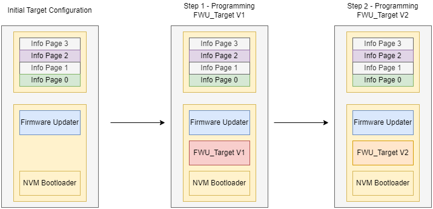
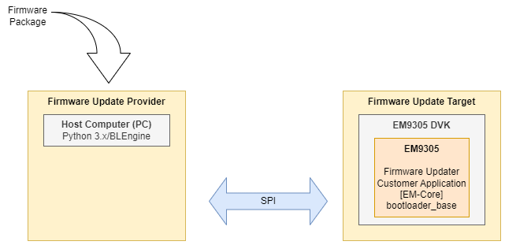
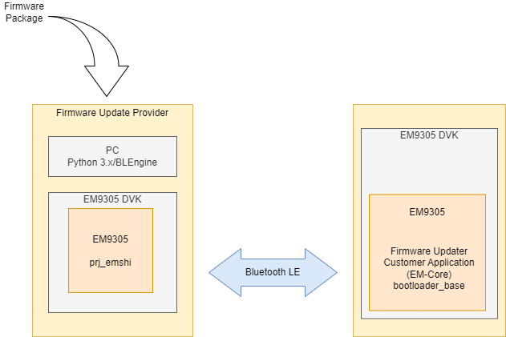
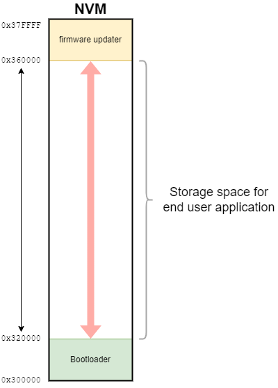
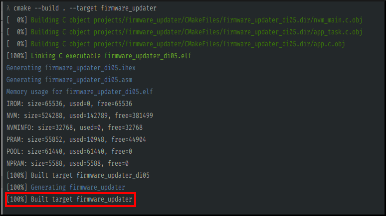
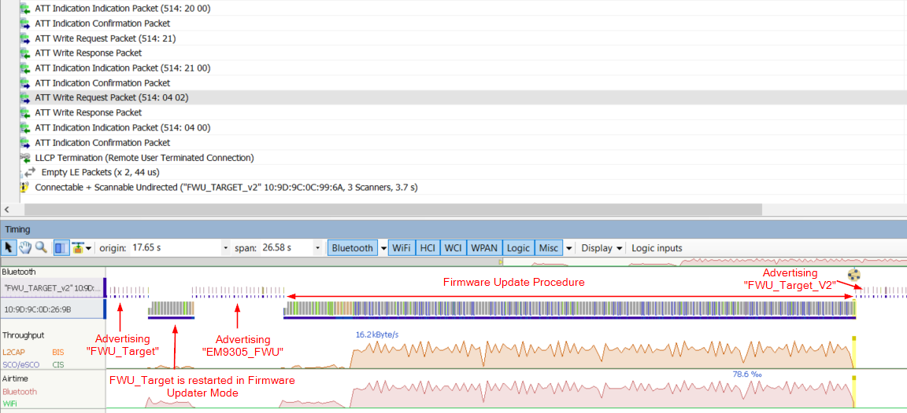

Firmware Update - A Step by Step process
1 Introduction
This pages shows the step-by-step process to setup and use the EM9305 SoC firmware update process.
The sample application provided in this SDK support the Firmware Update functionality over Bluetooth LE and SPI.
The figure below depicts the sequence of this Step-by-Step guide.
In order to properly execute the Firmware Update procedure, the initial configuration of the FWU Target consists of programming AES key in Key Container index 7 (Info Page 0) and the ECDSA Public Key for signature verification in Information Page 2 (User reserved Information Page area).
The AES symetric key and ECDSA asymetric key used in this step-by-step guide are provided in the SDK as test keys. These keys shall not be used in real product.
Refer to the Firmware Package Generator for keys generation procedures.
Then, when the Firmware Updater application is running, the version 1 of the FWU Target sample application is programmed in the FWU Target.
Once this is done, it is possible to update the firmware by programming the FWU Target V2 in the FWU Target device.
{kind=link}
2 Initial setup
2.1 Prerequisites for Firmware Update over SPI
One EM9305 DVK is needed for this demonstration.
{kind=link}
This scenario does not require Step 2.4 to be executed.
2.2 Prerequisites for Firmware Update over Bluetooth LE
Two DVKs are needed for this demonstration. One DVK is acting as the Firmware Update Target (the “Target”). The second DVK is acting as the Firmware Update Provider (the “Provider”).
{kind=link}
In this page, COM_A is used to refer to the COM port of the host computer connected to the Firmware Update Target device while COM_B is used to refer to the COM port of host computer connected to the Firmware Update Provider.
The following table summarizes the COM port identifications and the device connected to it.
Port |
Device |
|---|---|
COM_A |
Target |
COM_B |
Provider |
The Firmware Update Provider acts as the GATT Client. It initiates a connection to the Firmware Update target and proceeds with the firmware update.
BLEngine can be installed at system level using <SDK_ROOT>/tools/blengine/installer/setup.ps1. This makes blengine.exe available system-wide and replaces the blengine_cli.py.
As an example, the following command:
cd <SDK_ROOT>\tools\blengine\
python blengine_cli.py --version
produces the same output as:
"from anywhere in the system"
blengine.exe --version
2.3 Target initial configuration
The Target device shall be programmed with the following binary files:
nvm_bootloader_base.ihexfirmware_updater.ihex
When the application is running, the advertising procedure is started with the Complete Local Name set to “EM9305_FWU” in the Scan Response.
In order to use the cryptographic toolbox provided with the firmware update feature, the AES secret key shall be programmed in the Key Container index 7. This is done on the host computer connected to the Target by issuing the following command:
cd <SDK_ROOT>\tools\blengine\
python blengine_cli.py --port COM_A run write_key --index=7 --secret_key="0xdc43496ddc7b4eb046f470054a14cb8d"
Furthermore, the firmware signature requires the ECDSA signature public key to be programmed in NVM Information Page number 2 (User Info Page).
Test keys are available in the <SDK_ROOT>/tools/fw_update/myP2.json file and can be programmed as follow:
cd <SDK_ROOT>\tools\blengine\
python blengine_cli.py --port COM_A run nvm_write --in_file ..\fw_update\myP2.json --page user
The AES symetric key and ECDSA asymetric key used in this step-by-step guide are provided in the SDK as test keys. These keys shall not be used in real product.
Refer to the Firmware Package Generator for keys generation procedures.
2.4 Provider initial configuration
This section applies to Firmware Update over Bluetooth and is not required for Firmware Update over SPI.
The Provider device shall be programmed with the special ready to be used firmware prj_emshi.ihex which is provided in <SDK_ROOT>\tools\fw_update.
Its goal is to provide an API that abstracts the Bluetooth Host.
Such Bluetooth Host can therefore be controlled via Vendor Specific commands over HCI.
Programming this firmware can be achieved with the following command:
cd <SDK_ROOT>\tools\blengine\
python blengine_cli.py --port COM_B run emsystem_prog ..\fw_update\prj_emshi.ihex
3 Step-by-step procedure for Firmware Package Generation
3.1 Firmware packages generation
In this example, two firmware packages are generated. They are listed hereafter:
the file
fp_app_v1.packthat includes thenvm_fwu_targetfirmware. This firmware can be built from the SDK and it is located in theprojects\nvm_fwu_target folder. When this firmware is executed, the advertising procedure is started with the Complete Local name set to “FWU_TARGET” in the Scan Response.the file
fp_app_v2.packthat includes thenvm_fwu_target_v2firmware version 2. This firmware can be built from the SDK and it is located in theprojects\nvm_fwu_target folder. When this firmware is executed, the advertising procedure is started with the Complete Local name set to “FWU_TARGET_V2” in the Scan Response.
# Firmware Build:
cd <SDK_ROOT>\build
cmake --build . --target nvm_fwu_target_v2
# Firmware package generation
cd <SDK_ROOT>\tools\fw_update\
# Make sure all python package are installed
python -m pip install -r requirements.txt
python fpg.py generate_fw_package -k aes0.txt -e AES_CTR -s ecdsa0_pri.pem -f fp_app_v1.pack --ihex <SDK_ROOT>\build\projects\nvm_fwu_target\nvm_fwu_target.ihex
python fpg.py generate_fw_package -k aes0.txt -e AES_CTR -s ecdsa0_pri.pem -f fp_app_v2.pack --ihex <SDK_ROOT>\build\projects\nvm_fwu_target\nvm_fwu_target_v2.ihex
Note
Note: the keys provided with the Firmware package Generator are used for testing purpose and shall not be used for firmware package generation of a real application. Refer to the Firmware Package Generator section for more information on key generation.
The firmware package generator embeds a procedure to verify and display various information related to a firmware package.
python fpg.py verify_fw_package -k aes0.txt -s ecdsa0_pub.pem -f fp_app_v1.pack
FW Package Count: 1
Firmware package generation for EM9305 (EM9305-DI05)
FW Element 1
FW Header
Length: 40
Section Code: CustomerApp
Firmware Start Address: 0x302028
Firmware Size: 140088
Firmware CRC: 0x3cb41d
EM-Core CRC: 0xffffff
Firmware Version: 0
Firmware Execute Address: 0x302028
Firmware Header CRC: 0xeab2b0
FW Code:
Encrypted Length: 140088
Decrypted Length: 140088
Encryption Type: AES_CTR
FW Signature
X: 09623a5fbb43ac16c8817ecb5fe6b83be195d2b4e9f8c14692dbebaec7e12593
Y: 93797a08a33f6a14b3a4126b2e9fa1941974310a610914bfcbdb37f8a240fb83
Digest: ee59504e70301a3a4fb44bc89478d9b067ef5d9523f96c3b56e1dc75b26dda9c
Crypto Initialization Vector: 0xdd0d2e0392effb18d9226895f4d477fc
Signature Verification
Digest: 0xee59504e70301a3a4fb44bc89478d9b067ef5d9523f96c3b56e1dc75b26dda9c
Public Key: (can be used in this for in JSON file)
Public Key x: 0x2bc75b235b18c989796e6dca744036c37eb94f49a1b2c74fe4a426fa329d93e0
Public Key y: 0x9352f7ebef08e699390888c1671d121167fa23dbffce9ab4ddbfad0eadd2a516
Signature verified successfully
Firmware packages can also be generated with multiple ihex files. For instance, an initial firmware package that includes the original application compiled for EM-Core with its corresponding EM-Core can be generated. The update would then include the application v2 compiled for EM-Core but without EM-Core. Consequently the update procedure would be significantly faster since EM-Core does not need to be reprogrammed.
# Firmware Build:
cd <SDK_ROOT>\build
cmake --build . --target nvm_fwu_target_emcore
cmake --build . --target nvm_fwu_target_v2_emcore
# Firmware package generation
cd <SDK_ROOT>\tools\fw_update\
python fpg.py generate_fw_package -k aes0.txt -e AES_CTR -s ecdsa0_pri.pem -f fp_app_v1_emcore.pack --ihex <SDK_ROOT>\build\projects\nvm_fwu_target\nvm_fwu_target_emcore.ihex <SDK_ROOT>\emcore\bin\vA.B.C\standard\emcore_standard.ihex
python fpg.py generate_fw_package -k aes0.txt -e AES_CTR -s ecdsa0_pri.pem -f fp_app_v2_emcore.pack --ihex <SDK_ROOT>\build\projects\nvm_fwu_target\nvm_fwu_target_v2_emcore.ihex
With A.B.C = the version of EMCore.
3.2 Preparing the target
As already mentioned earlier, the target shall contain at least the two following firmware images for the firmware update process to be operational:
nvm_bootloader_base.ihex
The bootloader which will detect the presence of the firmware update application at the end of the NVM and pass execution to it.
firmware_updater.ihex
The firmware update application that can receive a new firmware image over SPI or BLE transport and write it into the NVM.
The nvm_bootloader_base.ihex file content will be stored at the beginning of the NVM memory (@ 0x300000) where the device startup process will jump. It shall be however noted that this firmware is mandatory in any case for the device to be able to startup any application which can be the firmware updater in this example, or the end user application.
This file is directly provided in the SDK in the <SDK_ROOT>\emcore\bin\nvm_bootloader folder and is ready to be programmed. It cannot be built.
The firmware_updater.ihex file content will be stored at the end of the NVM memory. This specific application firmware is the one that will actually implement the firmware image update over BLE. Its source code is provided in the SDK meaning it can be built in the SDK’s context and can also be used by an end user as a baseline to implement his own firmware updater.
The following diagram shows how the NVM is organized for the firmware update process to work.
{kind=link}
Building this firmware can be achieved within the SDK environment with the following commands:
cd <SDK_ROOT>\build
cmake --build . --target firmware_updater
The following output should be observed:
{kind=link}
Then the ihex file should be located in the <SDK_ROOT>\build\projects\firmware_updater folder as depicted in the following picture:
{kind=link}
Programming the two above mentioned firmware images shall be done in the right order which is given by the command line sequence below:
cd <SDK_ROOT>\tools\blengine\
python blengine_cli.py --port COM_A run emsystem_prog <SDK_ROOT>\build\projects\firmware_updater\firmware_updater.ihex
python blengine_cli.py --port COM_A run emsystem_prog <SDK_ROOT>\emcore\bin\nvm_bootloader\nvm_bootloader_base.ihex
At this point, the Firmware Update target is running the firmware updater application. It is advertising with the Complete Local Name “EM9305_FWU” in its scan response data.
Note
It is always possible to force the device to restart in Firmware Updater mode with the following command:
cd <SDK_ROOT>\tools\blengine\
python blengine_cli.py --port COM_A run restart --mode bootloader
3.3 Initial firmware programming v1
The following command lines instruct the Provider to initiate the firmware update procedure to update the target firmware with the file fp_app_v1.pack as the new image to update and using different transport layers.
3.3.1 Firmware update programming v1 over SPI
If a direct SPI connection to the device is available, then one can force using this transport to update the image as it is shown in the following command line example:
cd <SDK_ROOT>\tools\blengine\
python blengine_cli.py --port COM_A run firmware_update ..\fw_update\fp_app_v1.pack --transport SPI
Note the --transport SPI command line option.
3.3.2 Firmware update programming v1 over Bluetooth LE
Programming the firmware image version 1 over BLE can be done by issuing the following command line on the host computer:
cd <SDK_ROOT>\tools\blengine\
python blengine_cli.py --port COM_B run firmware_update ..\fw_update\fp_app_v1.pack --target-mac 10:9D:9C:0C:99:6A
This line instructs BLEngine to execute the firmware_update command using the fp_app_v1.pack firmware image to send to the device.
The --target_mac option introduces the MAC address of the target device in case there are more than one device in the Bluetooth environment.
Note
The MAC address exposed in the above command line is just an example. It has to be replaced by the actual MAC address to use.
The following extract showcases an example of a complete firmware update image over the BLE transport. At the end, if the operation is successful, it shows SUCCESS.
cd <SDK_ROOT>\tools\blengine\
python blengine_cli.py --port COM_B run firmware_update ..\fw_update\fp_app_v1.pack --target-mac 10:9D:9C:0C:99:6A
> standard blengine cli, -h for help
> searching for a config file...
> config file loaded: BLEngine/config.cfg
> local config file loaded: BLEngine/config_local.cfg
> Transport will use device cli_port_arg (/dev/ttyEM9305-WORK-1)
2024-02-26 16:52:32,535 blengine.EM9305.Engine INFO : engine starting up...
2024-02-26 16:52:32,544 blengine./dev/ttyEM9305-WORK-1 INFO : Serial port /dev/ttyEM9305-WORK-1 opened@115200
2024-02-26 16:52:32,570 blengine.FWU INFO : Firmware Update ovre BLE
2024-02-26 16:52:32,578 blengine.FWU INFO : Configuring Updater Device
2024-02-26 16:52:32,657 blengine.EM9305.Engine INFO : Device mode changed to active
2024-02-26 16:52:32,657 blengine.EM9305.Engine INFO : Device mode changed to emshi
2024-02-26 16:52:32,711 blengine.FWU INFO : Searching for target 10:9D:9C:0C:99:6A...
2024-02-26 16:52:34,821 blengine.FWU INFO : Device EM9305_FWU (10:9D:9C:0C:99:6A) found, connecting...
2024-02-26 16:52:35,169 blengine.FWU INFO : Services Discovery...
2024-02-26 16:52:36,125 blengine.FWU INFO : Service Discovery complete.
2024-02-26 16:52:36,147 blengine.FWU INFO : Service Configuration complete.
2024-02-26 16:52:36,147 blengine.FWU INFO : Update Started.
2024-02-26 16:52:36,147 blengine.FWU INFO : Getting Target Informations.
2024-02-26 16:52:36,176 blengine.FWU INFO : Target Information: Family ID EM9305 (DI04)
2024-02-26 16:52:36,176 blengine.FWU INFO : Firmware Version: 1; Firmware Type: FW Updater (0)
2024-02-26 16:52:36,237 blengine.FWU INFO : Processing Firmware Package ../Firmware_Package_Generator/fp_app_v1.pack.
2024-02-26 16:52:36,238 blengine.FWU INFO : 1 Firmwares found in package.
2024-02-26 16:52:36,466 blengine.FWU INFO : User App (0) - Upload Init.
2024-02-26 16:52:36,737 blengine.FWU INFO : User App (0) - Upload Start.
2024-02-26 16:52:36,924 blengine.FWU INFO : User App (0) - 1%
2024-02-26 16:52:38,626 blengine.FWU INFO : User App (0) - 14%
2024-02-26 16:52:40,276 blengine.FWU INFO : User App (0) - 27%
2024-02-26 16:52:42,010 blengine.FWU INFO : User App (0) - 40%
2024-02-26 16:52:43,638 blengine.FWU INFO : User App (0) - 54%
2024-02-26 16:52:45,371 blengine.FWU INFO : User App (0) - 67%
2024-02-26 16:52:47,027 blengine.FWU INFO : User App (0) - 80%
2024-02-26 16:52:48,767 blengine.FWU INFO : User App (0) - 93%
2024-02-26 16:52:49,623 blengine.FWU INFO : User App (0) - Upload Complete.
2024-02-26 16:52:49,653 blengine.FWU INFO : User App (0) - Firmware Uploaded.
2024-02-26 16:52:49,653 blengine.FWU INFO : Target Reboot.
> Procedure returned SUCCESS:
../fw_update/fp_app_v1.pack Uploaded Successfully
2024-02-26 16:52:49,697 blengine./dev/ttyEM9305-WORK-1 INFO : Serial port /dev/ttyEM9305-WORK-1 closed
2024-02-26 16:52:49,697 blengine.EM9305.Engine INFO : Engine Stopped, duration 17.15 s
3.4 Firmware update programming v2
At this point, the firmware v1 is the application running in the target. In order to update this application to a new version (e.g. the v2), a reboot in Firmware Update mode is required first.
Two options are available to restart the system in the desired mode:
This can be done with BLEngine via the EM9305 DVK:
Restart the system in Configuration Mode (USR button on the DVK)
Restart the system in Firmware Updater Mode (same boot mode selection as the customer bootloader)
Use the BLEngine firmware update procedure which automatically restarts the Target in the firmware update mode via Bluetooth.
3.4.1 Firmware update programming v2 over SPI
cd <SDK_ROOT>\tools\blengine\
python blengine_cli.py --port COM_A run firmware_update ..\fw_update\fp_app_v2.pack --transport SPI
3.4.2 Firmware update programming v2 over Bluetooth LE
cd <SDK_ROOT>\tools\blengine\
python blengine_cli.py --port COM_B run firmware_update ..\fw_update\fp_app_v2.pack --target-mac 10:9D:9C:0C:99:6A
At this point, the Firmware Update Target advertises with the Complete Local name “FWU_TARGET_V2” in its scan response data.
The following screenshot shows a complete firmware update over BLE captured using the Ellisys tool.
In the datagram, the first line shows the advertising packets with the name FWU_TARGET. Then, a new firmware image is uploaded to the device. After it is complete, the new image is started. It then advertises with the name FWU_TARGET_V2 showing that the version 2 of the image has been properly updated and is working.